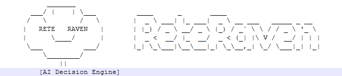

- Generated by
 1.16.1
1.16.1
 |
ReteRaven 1.0
A Rete-based rules engine and builder
|
Provides a fluent interface for constructing and configuring rules in a Rete-based rule engine. More...
Public Member Functions | |
| ReteBuilder (ReteEngine engine, string name) | |
| Initializes a new instance of the RuleBuilder class with the specified Rete engine and rule name. | |
| ReteBuilder< TInitial > | Where< T > (string name, string? debugLabel=null, Func< T, bool > initialCondition=null) |
| Adds a typed fact with an optional condition to the rule being built. This method creates an AlphaMemory node for the specified type T and connects it to the current rule chain. If an initial condition is provided, it will be used to filter facts of type T as they are asserted into the AlphaMemory. The name parameter is used to identify this match condition within the rule, allowing it to be referenced in subsequent conditions or actions. If a debug label is provided, diagnostic output will be written to the console when the type is added. | |
| ReteBuilder< TInitial > | And< T > (string name, Func< Token, T, bool > joinCondition, string? debugLabel=null) |
| Adds a join condition to the rule, requiring that both the previous conditions and the specified join condition are satisfied for a fact to match. | |
| ReteBuilder< TInitial > | Or< T > (string name, string? debugLabel=null, params Func< Token, T, bool >[] orConditions) |
| Adds a logical OR branch to the rule, allowing the rule to match if any of the specified conditions are satisfied for facts of the given type. | |
| ReteBuilder< TInitial > | AndNot< T > (string name, Func< Token, T, bool > joinCondition, string? debugLabel=null) |
| Adds a negated join condition to the rule, specifying that the rule should only match if there are no facts of type T that satisfy the given join condition. | |
| ReteBuilder< TInitial > | Not< T > (string name, Func< Token, T, bool > joinCondition, string? debugLabel=null) |
| Adds a "not" condition to the rule, specifying that there must be no facts of type T that satisfy the given join condition for the rule to match. | |
| ReteBuilder< TInitial > | Exists< T > (string name, Func< Token, T, bool > joinCondition, string? debugLabel=null) |
| Adds an "exists" condition to the rule, specifying that there must be at least one fact of type T that satisfies the given join condition for the rule to match. | |
| ReteBuilder< TInitial > | Then (Action< Token > action, int salience=0) |
| Adds a terminal action to the rule that will be executed when the rule is triggered. This method finalizes the rule definition by specifying the consequence of the rule. The action will be invoked each time the rule's conditions are satisfied. Salience can be used to control the order in which rules are executed when multiple rules are eligible to fire. Higher salience values indicate higher priority, meaning that rules with greater salience will be executed before those with lower salience when they are both eligible to fire. The default salience is 0, and rules with the same salience will be executed in the order they were added to the agenda. Use this method to specify the action that should be taken when the rule's conditions are met, and optionally assign a salience to influence the execution order of the rule relative to others. | |
| ReteBuilder< TInitial > | Trace (string label) |
| Adds a trace node to the rule builder pipeline with the specified label, enabling inspection of rule evaluation at this point. | |
| void | Assert (object fact) |
| Asserts the specified fact into the current context or knowledge base. | |
| ReteBuilder< TInitial > | StartWith (AlphaMemory alpha, string factName) |
| Begins the rule definition by specifying the initial AlphaMemory node and the fact name to match against. | |
| ReteBuilder< TInitial > | JoinWith< TNext > (ReteCore.AlphaMemory nextAlpha, Func< Token, TNext, bool > condition) |
| Adds a join node to the rule network that combines the current beta memory with the specified alpha memory using the given join condition. | |
| void | Then (Agenda agenda, Action< Token > action, int salience=0) |
| Defines the terminal action to execute when the rule is triggered, and adds the rule to the specified agenda with an optional salience. | |
Properties | |
| string | RuleName [get] |
| Gets the name of the rule associated with this instance. | |
Provides a fluent interface for constructing and configuring rules in a Rete-based rule engine.
Use the RuleBuilder to define the sequence of conditions and actions that make up a rule. The builder supports chaining methods to specify matching patterns, logical combinations (AND/OR), and actions to execute when the rule is triggered. Each method call adds a new node or condition to the rule's execution graph. The builder is not thread-safe and should be used from a single thread during rule construction.
| TInitial | The type of the initial fact or object that the rule operates on. |
| ReteBuilder< TInitial > ReteEngine.ReteBuilder< TInitial >.And< T > | ( | string | name, |
| Func< Token, T, bool > | joinCondition, | ||
| string? | debugLabel = null ) |
Adds a join condition to the rule, requiring that both the previous conditions and the specified join condition are satisfied for a fact to match.
Use this method to combine multiple conditions in a rule using logical AND semantics. The join condition is evaluated for each fact of type T, and only facts that satisfy the condition are considered matches. If a debug label is provided, diagnostic output is written to the console each time the join condition is evaluated.
| T | The type of fact to join with the current rule conditions. |
| name | The name used to identify the join node within the rule network. |
| joinCondition | A function that determines whether a given fact of type T should be joined with the current token. Returns true if the fact matches the join condition; otherwise, false. |
| debugLabel | An optional label used for debugging output. If specified, debug information about the join evaluation is written to the console. |
| ReteBuilder< TInitial > ReteEngine.ReteBuilder< TInitial >.AndNot< T > | ( | string | name, |
| Func< Token, T, bool > | joinCondition, | ||
| string? | debugLabel = null ) |
Adds a negated join condition to the rule, specifying that the rule should only match if there are no facts of type T that satisfy the given join condition.
| T | The type of fact to which the conditions apply. |
| name | The name used to identify this branch in the rule for debugging or tracing purposes. |
| joinCondition | A function that determines whether a given fact of type T should be joined with the current token. |
| debugLabel | An optional label used for debugging output. If specified, debug information about the evaluation of the condition is written to the console. |
| void ReteEngine.ReteBuilder< TInitial >.Assert | ( | object | fact | ) |
Asserts the specified fact into the current context or knowledge base.
| fact | The fact to assert. Cannot be null. |
| ReteBuilder< TInitial > ReteEngine.ReteBuilder< TInitial >.Exists< T > | ( | string | name, |
| Func< Token, T, bool > | joinCondition, | ||
| string? | debugLabel = null ) |
Adds an "exists" condition to the rule, specifying that there must be at least one fact of type T that satisfies the given join condition for the rule to match.
| T | The type of fact to which the conditions apply. |
| name | The name used to identify this branch in the rule for debugging or tracing purposes. |
| joinCondition | A function that determines whether a given fact of type T should be joined with the current token. |
| debugLabel | An optional label used for debugging output. If specified, debug information about the evaluation of the condition is written to the console. |
| ReteBuilder< TInitial > ReteEngine.ReteBuilder< TInitial >.JoinWith< TNext > | ( | ReteCore.AlphaMemory | nextAlpha, |
| Func< Token, TNext, bool > | condition ) |
Adds a join node to the rule network that combines the current beta memory with the specified alpha memory using the given join condition.
Use this method to extend the rule network by specifying additional join conditions between working memory elements. The join condition is evaluated for each combination of tokens and facts from the respective memories.
| TNext | The type of the facts stored in the alpha memory to be joined. |
| nextAlpha | The alpha memory node to join with the current beta memory. Cannot be null. |
| condition | A function that determines whether a token from the beta memory and a fact from the alpha memory should be joined. Returns true to join the pair; otherwise, false. |
| ReteBuilder< TInitial > ReteEngine.ReteBuilder< TInitial >.Not< T > | ( | string | name, |
| Func< Token, T, bool > | joinCondition, | ||
| string? | debugLabel = null ) |
Adds a "not" condition to the rule, specifying that there must be no facts of type T that satisfy the given join condition for the rule to match.
| T | The type of fact to which the conditions apply. |
| name | The name used to identify this branch in the rule for debugging or tracing purposes. |
| joinCondition | A function that determines whether a given fact of type T should be joined with the current token. |
| debugLabel | An optional label used for debugging output. If specified, debug information about the evaluation of the condition is written to the console. |
| ReteBuilder< TInitial > ReteEngine.ReteBuilder< TInitial >.Or< T > | ( | string | name, |
| string? | debugLabel = null, | ||
| params Func< Token, T, bool >[] | orConditions ) |
Adds a logical OR branch to the rule, allowing the rule to match if any of the specified conditions are satisfied for facts of the given type.
Each condition in orConditions is evaluated independently against facts of type T . The rule continues if at least one condition is met. This method enables branching logic within a rule, similar to a logical OR operation.
| T | The type of fact to which the conditions apply. |
| name | The name used to identify this branch in the rule for debugging or tracing purposes. |
| debugLabel | An optional label used for debugging output. If specified, debug information about the evaluation of each OR condition is written to the console. |
| orConditions | One or more predicate functions that define the alternative conditions. The rule matches if any of these predicates return true for a given fact. |
| ReteEngine.ReteBuilder< TInitial >.ReteBuilder | ( | ReteEngine | engine, |
| string | name ) |
Initializes a new instance of the RuleBuilder class with the specified Rete engine and rule name.
| engine | The ReteEngine instance that will be used to build and manage the rule. Cannot be null. |
| name | The name to assign to the rule being built. Cannot be null or empty. |
| ReteBuilder< TInitial > ReteEngine.ReteBuilder< TInitial >.StartWith | ( | AlphaMemory | alpha, |
| string | factName ) |
Begins the rule definition by specifying the initial AlphaMemory node and the fact name to match against.
Call this method as the first step when constructing a rule. Subsequent calls to JoinWith or other builder methods will extend the rule from this starting point.
| alpha | The AlphaMemory node that serves as the starting point for the rule's pattern matching. |
| factName | The name of the fact to be matched by the initial AlphaMemory node. Cannot be null or empty. |
| ReteBuilder< TInitial > ReteEngine.ReteBuilder< TInitial >.Then | ( | Action< Token > | action, |
| int | salience = 0 ) |
Adds a terminal action to the rule that will be executed when the rule is triggered. This method finalizes the rule definition by specifying the consequence of the rule. The action will be invoked each time the rule's conditions are satisfied. Salience can be used to control the order in which rules are executed when multiple rules are eligible to fire. Higher salience values indicate higher priority, meaning that rules with greater salience will be executed before those with lower salience when they are both eligible to fire. The default salience is 0, and rules with the same salience will be executed in the order they were added to the agenda. Use this method to specify the action that should be taken when the rule's conditions are met, and optionally assign a salience to influence the execution order of the rule relative to others.
Use this method to specify the consequence of the rule. The action will be invoked each time the rule's conditions are satisfied. Salience can be used to control the order in which rules are executed when multiple rules are eligible.
| action | The action to execute when the rule fires. The action receives the matched token as its parameter. Cannot be null. |
| salience | The priority of the rule when multiple rules are eligible to fire. Higher values indicate higher priority. The default is 0. |
| void ReteEngine.ReteBuilder< TInitial >.Then | ( | Agenda | agenda, |
| Action< Token > | action, | ||
| int | salience = 0 ) |
Defines the terminal action to execute when the rule is triggered, and adds the rule to the specified agenda with an optional salience.
This method finalizes the rule definition by specifying the action to perform when the rule conditions are met. The rule is then registered with the provided agenda. If multiple rules are eligible to fire, those with higher salience values are prioritized.
| agenda | The agenda to which the rule will be added. Cannot be null. |
| action | The action to execute when the rule fires. Receives the token that caused the rule to trigger. Cannot be null. |
| salience | The priority of the rule within the agenda. Higher values indicate higher priority. The default is 0. |
| ReteBuilder< TInitial > ReteEngine.ReteBuilder< TInitial >.Trace | ( | string | label | ) |
Adds a trace node to the rule builder pipeline with the specified label, enabling inspection of rule evaluation at this point.
Use trace nodes to monitor or debug the flow of facts through the rule network. Tracing can help diagnose rule behavior or performance issues by providing labeled checkpoints in the evaluation process.
| label | The label to associate with the trace node. Used to identify the trace point during rule evaluation. |
| ReteBuilder< TInitial > ReteEngine.ReteBuilder< TInitial >.Where< T > | ( | string | name, |
| string? | debugLabel = null, | ||
| Func< T, bool > | initialCondition = null ) |
Adds a typed fact with an optional condition to the rule being built. This method creates an AlphaMemory node for the specified type T and connects it to the current rule chain. If an initial condition is provided, it will be used to filter facts of type T as they are asserted into the AlphaMemory. The name parameter is used to identify this match condition within the rule, allowing it to be referenced in subsequent conditions or actions. If a debug label is provided, diagnostic output will be written to the console when the type is added.
Use this method to specify that the rule should match facts of type T. Multiple calls to Where can be chained to build more complex rules. The name parameter is used to reference this type in subsequent rule conditions or actions.
| T | The type of fact to match in the rule. |
| name | The name used to identify this match condition within the rule. Cannot be null or empty. |
| debugLabel | An optional label used for debugging purposes. If specified, diagnostic output will be written when the type is added. |
| initialCondition | A function that defines an optional initial condition to filter facts of type T as they are asserted into the AlphaMemory. The rule stops at this point if this initial condition is not satisfied. |